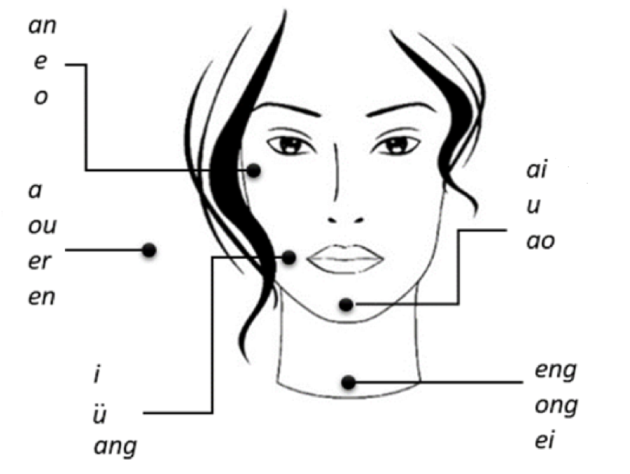
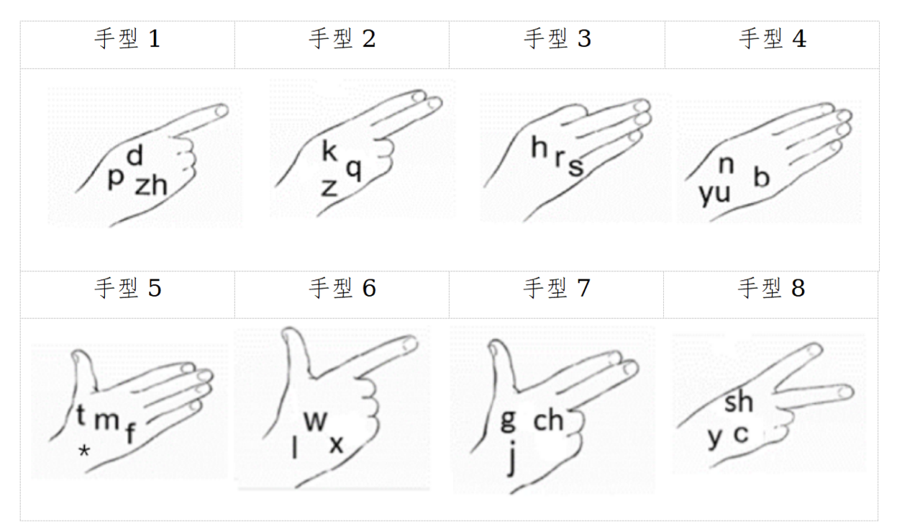

什么是线索语What Is Cued Speech
一种视觉沟通系统A Visual Communication System
线索语（Cued Speech）用手型、手位和口型三种视觉信息，把口语"翻译"成看得见的样子。它不是在传递一种新的语言，而是把说话人本来就在说的话，变成听障人士可以准确看懂的样子。Cued Speech uses handshapes, hand positions, and mouth shapes to make spoken language visible. It doesn't add a new language — it makes what the speaker is already saying accurately readable by sight.
为什么需要它：读唇是模糊的Why It's Needed: Lipreading Is Ambiguous
很多发音在嘴上看起来几乎一样——比如 b、p、m 三个音，光看嘴型很难分辨。这不是训练不够，而是这些音在口型上本来就相似。线索语用手部动作补上口型缺失的信息：同一个口型配上不同的手型，就能准确区分到底是哪个音。手势不是独立的信号，它必须和口型一起看才有意义。Many sounds look nearly identical on the mouth — for example, /b/, /p/, and /m/ are very hard to tell apart by lipreading alone. Cued Speech adds the hand information the mouth shape is missing: the same mouth shape paired with different handshapes becomes clearly distinguishable. The cue is never read alone — it only makes sense together with the mouth shape.
历史History
线索语由美国学者 R. Orin Cornett 于1966年在 Gallaudet University 发明，最初为英语设计，之后被改编到六十多种语言。普通话线索语（Mandarin Cued Speech）是其中的中文改编版本，把手型和位置对应到普通话的声母、韵母结构。相比英文版本，普通话线索语目前的研究和推广仍非常有限。Cued Speech was invented in 1966 by R. Orin Cornett at Gallaudet University, originally for English, and has since been adapted to more than 60 languages. Mandarin Cued Speech is the Chinese adaptation, mapping handshapes and positions onto the initial/final structure of Standard Mandarin. Compared to the English system, Mandarin Cued Speech remains a niche, still-emerging system.
用途Uses
线索语主要用于聋人教育和言语治疗：帮助听障儿童建立准确的语音意识、辅助阅读和拼写学习；治疗师用它做发音矫正训练；有听障孩子的家庭用它在日常对话中减少猜测和误解；对使用人工耳蜗或助听器的用户，它也能帮助巩固对模糊音的分辨能力。Cued Speech is mainly used in deaf education and speech-language therapy — helping deaf and hard-of-hearing children build accurate phonological awareness for reading and spelling, supporting articulation therapy, and reducing guesswork in everyday family conversation. It can also help users of cochlear implants or hearing aids sharpen their perception of visually ambiguous sounds.
和手语的区别How It Differs from Sign Language
手语（如中国手语）是一门独立的自然语言，有自己的语法、词汇和句法，不依附于口语存在。线索语不是一门语言——它没有独立的语法或词汇，纯粹是口语的视觉编码：说话人讲的是普通话，线索语只是让这句普通话变得可以准确"看见"。Sign language (such as Chinese Sign Language) is a full, independent natural language with its own grammar and vocabulary. Cued Speech is not a language — it has no grammar or vocabulary of its own. It is purely a visual code for spoken language: the speaker is speaking Mandarin, and Cued Speech simply makes that Mandarin accurately visible.
5个位置 · 8个手型5 Positions · 8 Handshapes

